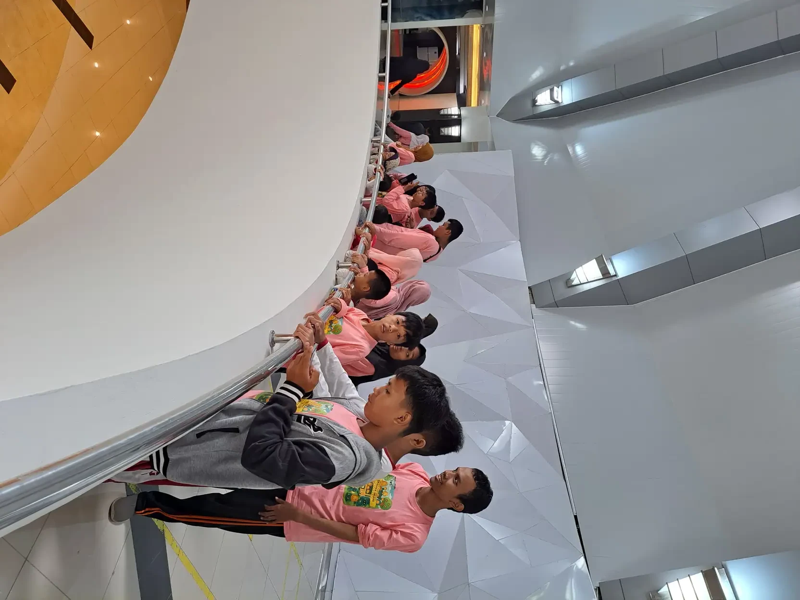

Bahasa tuna rungu adalah keseluruhan cara anak dengan gangguan pendengaran menerima dan menyampaikan makna, mulai dari bahasa isyarat, bicara oral, membaca gerak bibir, sampai gabungan semuanya. Tidak ada satu jalur tunggal yang cocok untuk semua anak. Pilihan yang tepat bergantung pada seberapa besar sisa pendengaran anak, kapan gangguan itu ditemukan, alat bantu yang dipakai, dan bahasa yang benar-benar hidup di rumahnya. Yang paling menentukan bukan jenis metodenya, melainkan seberapa cepat anak mendapat bahasa yang bisa ia serap sepenuhnya. Artikel ini membahas jalur komunikasi yang tersedia, perbedaan BISINDO dan SIBI di Indonesia, kapan sebaiknya dimulai, serta langkah nyata yang bisa keluarga lakukan mulai hari ini.
Apa Itu Bahasa Tuna Rungu?
Istilah bahasa tuna rungu sebenarnya bukan nama satu bahasa tertentu. Yang dimaksud orang tua ketika mengetiknya di mesin pencari biasanya adalah pertanyaan sederhana: dengan cara apa anak yang tidak atau kurang mendengar bisa memahami orang lain dan menyampaikan isi kepalanya sendiri?
Jawabannya jamak. Sebagian anak memakai bahasa isyarat sebagai bahasa utama. Sebagian lain, terutama yang sisa pendengarannya masih baik dan memakai alat bantu dengar, tumbuh dengan bahasa lisan. Banyak juga yang memakai keduanya bergantian, menyesuaikan lawan bicara dan situasi.
World Health Organization membedakan dua istilah yang sering tercampur. Hard of hearing merujuk pada orang dengan gangguan dengar ringan sampai berat, yang umumnya tetap berkomunikasi dengan bahasa lisan dan terbantu alat bantu dengar, implan, atau teks. Sementara deaf merujuk pada mereka dengan gangguan sangat berat, yang sebagian memakai bahasa isyarat.
- Tuli dengan huruf T besar dipakai komunitas untuk menyebut identitas budaya dan bahasa, bukan sekadar kondisi medis.
- Tunarungu adalah istilah administratif yang masih dipakai di dokumen sekolah dan layanan pemerintah.
- Tunarungu wicara menunjuk kondisi ketika gangguan dengar ikut berdampak pada kemampuan bicara.
Memilih istilah yang tepat bukan urusan sopan santun semata. Cara kita menamai sesuatu ikut membentuk cara kita memperlakukannya. Anak Tuli bukan anak yang gagal bicara, melainkan anak yang jalur bahasanya lewat mata.

Empat Jalur Komunikasi yang Dipakai Anak Tuli
Dalam praktik, ada empat pendekatan besar yang biasa ditemui keluarga di Indonesia. Keempatnya bukan pilihan hitam putih dan sering dipakai bersamaan.
1. Bahasa isyarat
Bahasa isyarat adalah bahasa visual dengan tata bahasa sendiri. Anak menyerapnya lewat penglihatan tanpa hambatan, sehingga ia bisa punya bahasa yang utuh sejak dini meski pendengarannya nol. Di Indonesia, bahasa isyarat alami komunitas Tuli disebut BISINDO.
2. Pendekatan oral dan auditori
Jalur ini menekankan pemanfaatan sisa pendengaran melalui alat bantu dengar atau implan koklea, dipadukan terapi wicara intensif. Cocok untuk anak dengan sisa pendengaran yang bisa dioptimalkan dan keluarga yang siap mendampingi latihan harian.
3. Membaca ujaran
Membaca gerak bibir dan mimik lawan bicara membantu, tetapi tidak pernah cukup berdiri sendiri. Banyak bunyi bahasa terlihat mirip di bibir, dan sebagian besar informasi harus ditebak dari konteks. Karena itu membaca ujaran sebaiknya diposisikan sebagai pelengkap, bukan tulang punggung.
4. Komunikasi total
Pendekatan ini sengaja memakai semua saluran sekaligus: isyarat, suara, tulisan, gambar, gestur, dan ekspresi. Tujuannya memastikan pesan sampai, apa pun caranya. Banyak sekolah luar biasa dan keluarga di Indonesia memakai pola ini karena paling luwes.
WHO sendiri memasukkan pelatihan bahasa isyarat, terapi wicara dan bahasa, teknologi dengar, serta layanan teks dan juru bahasa isyarat sebagai satu paket rehabilitasi, bukan pilihan yang saling meniadakan.
BISINDO dan SIBI, Dua Hal yang Sering Tertukar
Di Indonesia ada dua sistem isyarat yang beredar luas, dan keduanya kerap dianggap sama. Padahal keduanya berbeda secara mendasar.
BISINDO (Bahasa Isyarat Indonesia) adalah bahasa yang tumbuh alami di kalangan komunitas Tuli Indonesia. Ia punya kosakata dan tata bahasanya sendiri, tidak menyalin struktur bahasa Indonesia lisan. Istilah BISINDO pertama kali dipakai dalam resolusi kongres ke-7 Gerkatin di Makassar pada 2006, dan kemudian diteliti serta dikembangkan oleh Pusat Bahasa Isyarat Indonesia (Pusbisindo) bersama laboratorium riset bahasa isyarat di perguruan tinggi.
SIBI (Sistem Isyarat Bahasa Indonesia) bukan bahasa alami, melainkan sistem buatan yang dirancang untuk mengikuti struktur bahasa Indonesia. SIBI memakai isyarat khusus untuk imbuhan seperti awalan dan akhiran, sehingga satu kata bisa memerlukan beberapa gerakan berurutan. Akibatnya kalimat SIBI jauh lebih panjang dibanding kalimat BISINDO. SIBI dibakukan pemerintah untuk keperluan pendidikan dan sampai kini masih menjadi sistem yang dipakai di banyak sekolah luar biasa.
| Aspek | BISINDO | SIBI |
|---|---|---|
| Asal | Tumbuh alami di komunitas Tuli | Dirancang untuk kebutuhan pendidikan |
| Status | Bahasa dengan tata bahasa sendiri | Sistem isyarat pengiring bahasa Indonesia |
| Struktur | Visual, urutan kata dapat berbeda dari bahasa lisan | Mengikuti urutan dan imbuhan bahasa Indonesia |
| Panjang kalimat | Relatif ringkas | Lebih panjang karena imbuhan diisyaratkan |
| Pemakaian utama | Percakapan sehari-hari komunitas Tuli | Kelas dan bahan ajar di sekolah |
Konsekuensi praktisnya jelas. Kalau tujuan Anda adalah agar anak bisa berbincang lepas dengan sesama Tuli dan punya komunitas, BISINDO adalah pintunya. Kalau anak bersekolah di lembaga yang memakai SIBI, ia tetap perlu mengenalnya agar bisa mengikuti pelajaran. Keduanya bukan pilihan yang harus saling menyingkirkan.
Kapan Anak Sebaiknya Mulai Dikenalkan Bahasa?
Jawaban singkatnya: sesegera mungkin, tanpa menunggu kepastian apa pun. Tahun-tahun pertama adalah masa ketika otak paling siap membangun fondasi bahasa. Menunda paparan bahasa sambil menunggu hasil tes, menunggu alat bantu turun, atau menunggu anak cukup umur, berarti membiarkan jendela itu menyempit.
Yang penting dipahami: mengenalkan bahasa isyarat tidak menghambat kemunculan bicara. Anak yang punya bahasa isyarat justru memiliki alat untuk memahami konsep, menyebut benda, dan menyampaikan keinginan, dan modal itulah yang nanti membantu ketika bicara lisan mulai dilatih. Bahaya yang nyata bukan terlalu banyak bahasa, melainkan terlalu sedikit.
Prinsip yang aman dipegang keluarga: berikan anak minimal satu bahasa yang bisa ia serap sepenuhnya tanpa hambatan sejak dini. Untuk anak dengan gangguan dengar berat, bahasa itu hampir selalu bahasa isyarat. Bicara lisan bisa ditambahkan kemudian sesuai kemampuan dengar dan hasil terapi.
Menurut data WHO, sekitar 95,1 juta anak dan remaja usia 5 sampai 19 tahun di dunia hidup dengan gangguan pendengaran. Ketika gangguan itu tidak ditangani, dampaknya merembet ke kemampuan komunikasi, capaian belajar, dan kehidupan sosial. Karena itu deteksi dini dan pemberian bahasa sedini mungkin adalah dua langkah yang harus berjalan bersamaan, bukan berurutan.
Kalau Anda masih meraba-raba apakah anak Anda termasuk anak berkebutuhan khusus, artikel pengertian ABK dan ciri-ciri ABK bisa jadi titik awal yang menenangkan.
Peran Keluarga, Rumah Adalah Kelas Bahasa Pertama
Anak menghabiskan jauh lebih banyak jam di rumah daripada di ruang terapi. Karena itu kualitas bahasa di rumah menentukan lebih banyak hal dibanding jumlah sesi terapi per minggu.
Masalah yang paling sering terjadi bukan keluarga tidak peduli, melainkan keluarga hanya menguasai beberapa isyarat dasar untuk perintah harian: makan, mandi, tidur, jangan. Anak jadi mengerti aturan rumah, tetapi tidak pernah diajak bercakap-cakap. Ia tidak mendapat kesempatan bertanya kenapa, menceritakan kejadian di sekolah, atau menyampaikan bahwa ia sedang kesal.
Beberapa hal yang membuat perbedaan besar:
- Seluruh anggota rumah ikut belajar, bukan hanya ibu. Kalau hanya satu orang yang bisa berisyarat, anak hidup dalam ruang bahasa yang sangat sempit.
- Bicarakan hal-hal yang tidak sedang terjadi. Cerita tentang kemarin, tentang besok, tentang perasaan. Ini yang membangun bahasa, bukan sekadar penamaan benda.
- Pastikan wajah terlihat. Sejajarkan tinggi badan, hindari membelakangi cahaya, jangan bicara sambil berjalan pergi.
- Beri jeda dan tunggu giliran anak. Anak butuh waktu memindahkan pandangan dari benda ke wajah Anda, lalu kembali lagi.
- Perlakukan setiap upaya sebagai percakapan. Tunjukan, gestur, tarikan tangan, dan tatapan semuanya adalah usaha berkomunikasi yang layak dijawab.
Pendekatan seperti Hanen Approach memakai prinsip yang sama, yaitu menjadikan orang tua sebagai mitra bicara utama dan memanfaatkan rutinitas harian sebagai bahan latihan bahasa.
Mitos yang Perlu Diluruskan
Banyak keputusan keliru lahir dari keyakinan yang tidak pernah diperiksa ulang. Beberapa yang paling sering terdengar di ruang tunggu klinik dan grup orang tua:
- Mitos: bahasa isyarat membuat anak malas bicara. Kenyataannya, anak butuh bahasa untuk berpikir. Isyarat memberi anak konsep dan kosakata lebih dulu, dan modal itu membantu ketika bicara lisan dilatih.
- Mitos: semua anak tuli bisa membaca gerak bibir. Banyak bunyi terlihat identik di bibir, dan sebagian besar isi kalimat harus ditebak. Membaca ujaran melelahkan dan tidak pernah akurat sepenuhnya.
- Mitos: alat bantu dengar mengembalikan pendengaran seperti semula. Alat bantu dengar memperkeras dan memperjelas suara, tidak menyembuhkan. Implan koklea pun tetap memerlukan latihan panjang agar bunyi jadi bermakna.
- Mitos: anak tuli otomatis punya keterbatasan kecerdasan. Gangguan dengar adalah masalah akses informasi, bukan kapasitas berpikir. Anak yang mendapat bahasa sejak dini berkembang setara teman sebayanya.
- Mitos: berteriak membantu anak mengerti. Berteriak justru mendistorsi bunyi dan mengubah bentuk mulut, sehingga makin sulit dibaca. Bicara jelas dengan tempo normal jauh lebih menolong.
- Mitos: cukup satu orang di rumah yang bisa berisyarat. Kalau hanya satu orang yang bisa, anak hanya punya satu pintu keluar bagi seluruh isi kepalanya.
Meluruskan enam hal ini saja sudah mengubah banyak keputusan sehari-hari di rumah.
Langkah Praktis untuk Orang Tua
Kalau Anda baru mulai, ini urutan yang masuk akal untuk dikerjakan.
- Pastikan status pendengaran anak secara objektif. Datangi dokter THT dan audiolog untuk pemeriksaan, bukan menyimpulkan sendiri dari respons anak di rumah. Hasil audiogram menentukan pilihan alat bantu dan strategi komunikasi.
- Mulai belajar BISINDO sekeluarga. Cari kelas komunitas atau pengajar Tuli di kota Anda. Belajar langsung dari penutur Tuli jauh lebih efektif daripada hanya menghafal dari kamus gambar.
- Bangun rutinitas bahasa harian. Pilih tiga momen tetap, misalnya makan pagi, mandi sore, dan sebelum tidur, lalu jadikan ketiganya waktu bercakap-cakap, bukan sekadar memberi perintah.
- Sediakan penanda visual di rumah. Jadwal bergambar, label pada laci, dan foto kegiatan membantu anak memprediksi apa yang akan terjadi dan mengurangi frustrasi.
- Hubungkan anak dengan anak dan orang dewasa Tuli lain. Anak perlu melihat orang dewasa Tuli yang mandiri dan bekerja untuk membayangkan masa depannya sendiri.
- Koordinasikan rumah, sekolah, dan terapis. Pastikan kosakata dan isyarat yang dipakai konsisten agar anak tidak bingung berpindah lingkungan.
- Jaga stamina keluarga. Proses ini panjang. Bagi peran, minta bantuan kerabat, dan izinkan diri Anda beristirahat.
Anak juga tetap perlu ruang bermain dan gerak. Aktivitas seperti permainan motorik kasar membuka banyak kesempatan berkomunikasi secara alami, karena selalu ada hal seru yang ingin diceritakan anak setelahnya.
Dukungan di Sekolah dan Hak Anak
Anak dengan gangguan pendengaran berhak atas pendidikan, dan hak itu punya dasar hukum. Undang-Undang Nomor 8 Tahun 2016 tentang Penyandang Disabilitas menempatkan disabilitas sensorik, yang mencakup disabilitas rungu dan wicara, sebagai bagian dari ragam penyandang disabilitas yang dijamin haknya, termasuk hak pendidikan tanpa diskriminasi.
Aturan turunannya, Peraturan Pemerintah Nomor 13 Tahun 2020 tentang Akomodasi yang Layak untuk Peserta Didik Penyandang Disabilitas, mengatur kewajiban satuan pendidikan menyediakan penyesuaian agar peserta didik penyandang disabilitas bisa belajar setara. Untuk anak tunarungu, penyesuaian itu bisa berbentuk posisi duduk di depan, materi visual, catatan tertulis, atau pendampingan juru bahasa isyarat.
Beberapa hal yang layak Anda tanyakan saat menjajaki sekolah:
- Sistem isyarat apa yang dipakai guru sehari-hari, BISINDO atau SIBI?
- Apakah ada guru pendamping khusus atau juru bahasa isyarat?
- Bagaimana instruksi lisan disampaikan ulang secara visual?
- Bagaimana anak dilibatkan dalam kegiatan kelompok dan istirahat?
- Apakah sekolah bersedia berkoordinasi rutin dengan terapis anak?
Sekolah reguler yang menerapkan pendidikan inklusi bisa jadi pilihan yang sangat baik selama dukungannya nyata, bukan sekadar menerima anak lalu membiarkannya duduk tanpa akses informasi. Sekolah luar biasa juga tetap relevan, terutama ketika lingkungan berbahasa isyarat yang kaya lebih tersedia di sana.
Layanan dan Sumber Belajar di Indonesia
Jalur layanan di Indonesia terpisah-pisah, jadi orang tua perlu tahu harus mengetuk pintu mana.
Jalur kesehatan. Mulai dari puskesmas untuk pemeriksaan awal telinga, lalu rujukan ke dokter THT dan audiolog di rumah sakit untuk pemeriksaan pendengaran yang lebih lengkap. Kementerian Kesehatan mendorong deteksi dini gangguan pendengaran dan perilaku mendengar yang aman sebagai program yang berjalan terus, karena sebagian besar gangguan pendengaran sebenarnya bisa dicegah.
Jalur terapi. Terapi wicara membantu produksi bunyi, artikulasi, dan pemahaman bahasa. Untuk anak yang juga punya tantangan sensorik atau motorik, terapi lain bisa berjalan beriringan. Gambaran lengkap pilihan yang ada bisa dibaca di artikel macam-macam terapi pada anak.
Jalur komunitas. Inilah yang paling sering terlewat. Komunitas Tuli menyediakan sesuatu yang tidak bisa diberikan klinik mana pun, yaitu bahasa yang hidup dan teman sebaya. Cari kelas BISINDO yang diampu pengajar Tuli, ikuti kegiatan komunitas, dan biarkan anak melihat bahwa dunianya luas.
Jalur pendidikan. Dinas pendidikan setempat bisa memberi informasi sekolah luar biasa dan sekolah penyelenggara inklusi di wilayah Anda, termasuk ketersediaan guru pendamping khusus.
Yayasan Ukhuwah Kaffah Amanatullah (YUKA) di Yogyakarta mendampingi anak berkebutuhan khusus dan keluarganya lewat pendidikan, pembinaan, dan kegiatan yang memperluas pengalaman anak. Jika Anda sedang mencari titik awal, memulai percakapan dengan lembaga pendamping sering kali jauh lebih ringan daripada mencari sendirian.
Terakhir, satu pengingat yang perlu dipegang: tulisan ini bersifat edukatif dan tidak menggantikan pemeriksaan, diagnosis, atau saran dari dokter THT, audiolog, maupun terapis yang menangani anak Anda secara langsung.
Pertanyaan yang Sering Diajukan
Apakah bahasa isyarat membuat anak jadi tidak mau belajar bicara?
Tidak. Bahasa isyarat memberi anak konsep, kosakata, dan cara menyampaikan maksud sejak dini, dan modal itu justru menopang perkembangan bahasa secara keseluruhan. Risiko yang nyata bukan anak mendapat terlalu banyak bahasa, melainkan anak terlalu lama hidup tanpa bahasa yang benar-benar bisa ia serap. Bicara lisan tetap bisa dilatih bersamaan lewat terapi wicara sesuai sisa pendengaran anak.
Sebaiknya keluarga belajar BISINDO atau SIBI?
Untuk percakapan sehari-hari dan agar anak punya komunitas, BISINDO adalah pilihan yang paling masuk akal karena ia bahasa alami komunitas Tuli Indonesia. SIBI tetap perlu dikenal jika sekolah anak memakainya sebagai bahasa pengantar di kelas. Banyak keluarga akhirnya menguasai keduanya, dan itu tidak masalah selama anak punya minimal satu bahasa yang benar-benar lancar.
Umur berapa anak tunarungu mulai diajari bahasa isyarat?
Sedini mungkin, bahkan sejak bayi dan tanpa menunggu hasil pemeriksaan final. Bayi mulai memperhatikan wajah dan tangan jauh sebelum ia bisa berbicara, sehingga isyarat sederhana seperti susu, lagi, dan habis bisa diperkenalkan sangat awal. Menunda paparan bahasa sambil menunggu kepastian medis justru memperbesar jarak perkembangan yang harus dikejar kemudian.
Apakah anak tunarungu bisa bersekolah di sekolah reguler?
Bisa, sepanjang sekolah menyediakan dukungan yang nyata. Peraturan Pemerintah Nomor 13 Tahun 2020 mengatur kewajiban satuan pendidikan menyediakan akomodasi yang layak bagi peserta didik penyandang disabilitas. Untuk anak tunarungu, bentuknya bisa berupa posisi duduk strategis, materi visual, catatan tertulis, sampai pendampingan juru bahasa isyarat. Tanpa dukungan itu, anak hadir di kelas tetapi tidak mendapat akses informasi.
Bagaimana cara bicara yang benar dengan anak tuna rungu?
Pastikan wajah Anda terlihat jelas dan cahaya tidak berada di belakang Anda, sejajarkan tinggi badan dengan anak, lalu bicara dengan tempo normal dan artikulasi jelas. Jangan berteriak karena itu justru mendistorsi bunyi dan mengubah bentuk mulut. Sertakan isyarat, gestur, tulisan, atau gambar sebagai penguat, dan beri jeda agar anak sempat memindahkan pandangannya.
Apakah semua anak tuna rungu perlu implan koklea?
Tidak. Implan koklea ditujukan untuk anak dengan gangguan dengar berat sampai sangat berat yang tidak cukup terbantu alat bantu dengar, dan keputusannya diambil bersama tim medis setelah serangkaian pemeriksaan. Implan juga bukan jalan pintas, karena hasilnya sangat bergantung pada terapi lanjutan dan dukungan bahasa di rumah. Banyak anak berkembang sangat baik tanpa implan selama bahasanya terpenuhi.
Sumber Resmi dan Referensi
Artikel ini menggunakan sumber publik yang mendukung informasi kesehatan dan pendidikan:
- World Health Organization: Deafness and hearing loss
- World Health Organization: World report on hearing
- NIDCD (NIH): American Sign Language
- NIDCD (NIH): Speech and Language Developmental Milestones
- ASHA: How Hearing Loss Affects a Child's Development
- Kementerian Kesehatan RI: Kemenkes Dorong Deteksi Dini dan Perilaku Mendengar Aman
- Peraturan RI: UU No. 8 Tahun 2016 tentang Penyandang Disabilitas
- Peraturan RI: PP No. 13 Tahun 2020 tentang Akomodasi yang Layak untuk Peserta Didik Penyandang Disabilitas
Disclaimer Medis dan Pendidikan: Artikel ini bersifat edukasi umum dan bukan pengganti diagnosis, terapi, atau konsultasi profesional. Untuk keputusan kesehatan anak, konsultasikan dengan dokter atau tenaga profesional yang berwenang.
Dukung Pendidikan Inklusi Anak Berkebutuhan Khusus
Setiap donasi Anda membantu anak-anak autis dan berkebutuhan khusus mendapatkan pendidikan, terapi, dan pendampingan yang mereka butuhkan untuk tumbuh mandiri dan berprestasi.